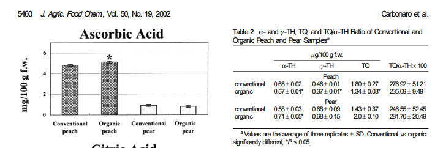

Comparem nectarines ecològiques i convencionals: quina té més nutrients segons la ciència i segons la IA?
He trobat diferents articles científics que estudien el meu tema i els trobareu a continuació en format APA7. APA7 és una forma d'escriure un article científic.
Carbonaro Marina, Mattera Maria, Nicoli Stefano, Bergamo Paolo y Cappelloni Marsilio (19-12-2002)
Modulation of Antioxidant Compounds in Organic vs Conventional Fruit (Peach, Prunus persica L., and Pear, Pyrus communis L.) 5p.
Sempre posem primer els autors pel cognom i les inicials del nom, després l'any entre parèntesis, el títol, després el nom de la revista abreujat, el volum i les pàgines que té.

γ-TH: vitamina E, α-TH: alfa-tocoferol, TQ: tocotrienoles, TQ/α-TH × 100: es la quantitat general de VitaminaE
Podem veure la diferència de Vitamines E entre l'orgànica i la convencional tenint la convencional 276.92 ± 51.21 cada µg/100 g f.w. i l'orgànica contenint 235.09 ± 9.49 cada µg/100 g f.w. també s'ha de dir que són aproximacions als valors reials
Caffeic acid: cafeina, chlorogenic acid: carboxílic, catechol: dihidroxibenzè, és un compost orgànic i polyphenols
En la figura 4 podrà veure que no hi ha diferències estadísticament entre el nivell de Vitamina C d’un nap cultivat convencionalment o un cultiu ecològic. Observem que els resultats són molt variables entre 1,5 g de Vitamines.